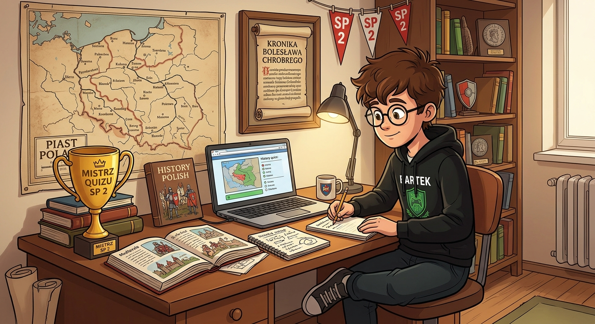
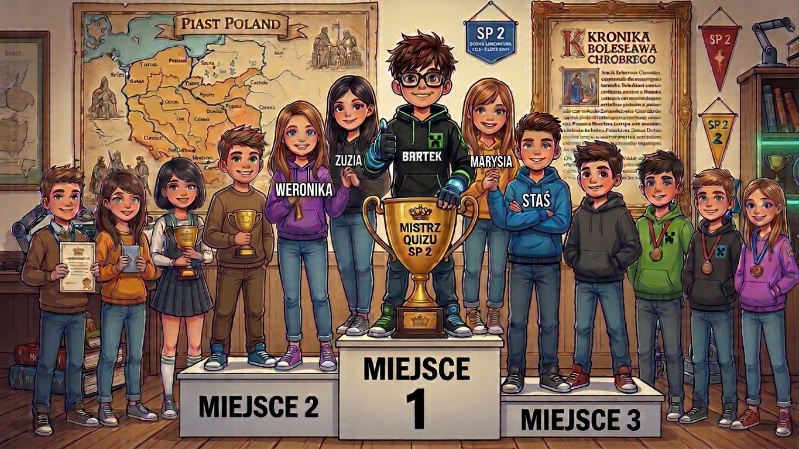
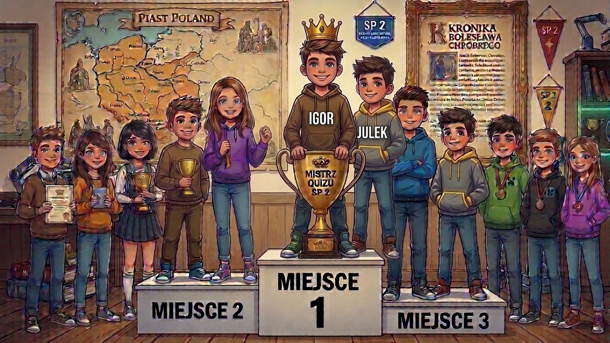

Bartek ostro trenuje przed konkursami, szlifując formę między innymi na własnoręcznie przygotowanych tutaj quizach o SP 2, Bolesławie Chrobrym i początkach państwa polskiego.

Wiadomość od Taty:
Tato kibicuje obu drużynom z klasy 5B – zarówno ekipie Bartka (Weronice, Zuzi, Bartkowi, Marysi i Stasiowi), jak i drużynie Igora (Igorowi i Julkowi)! Trzymam mocno kciuki i życzę Wam wszystkim ogromnego powodzenia, spokoju oraz zasłużonych miejsc na podium w obu konkursach! 💪🔥

